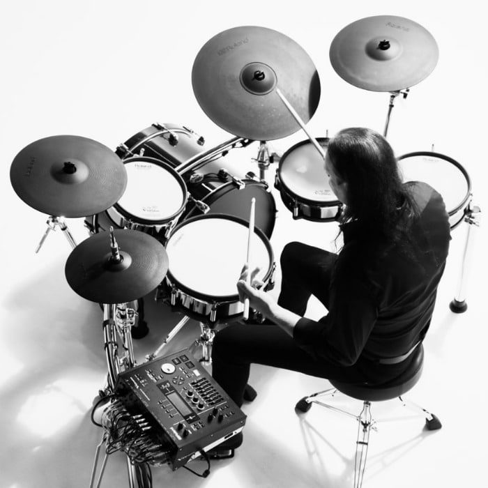
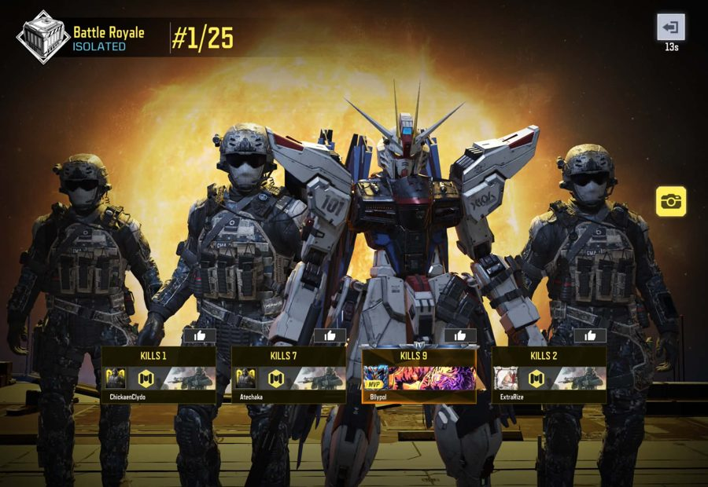
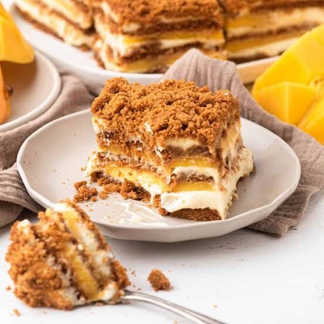

Welcome to My Website
Introduction
Welcome to my website! I am still a beginner in web development, and this website is part of my journey in learning, creating, and improving my skills. I may still have a lot to learn, but I believe that every small step helps me grow and become better.
A Quote I Believe In
“We are what we repeatedly do. Excellence, then, is not an act, but a habit.”
— Aristotle
My Interpretation
I believe this quote means that becoming good at something takes practice, patience, and consistency. As a beginner, I know I won't be perfect right away, but by continuing to learn and practice, I can improve little by little.
About Me
Who Am I?
Hello! My name is Billy Paul C. Abugan, and I am 22 years old. I come from Tubod, Lanao del Norte, a place known as the “Land of Beauty and Bounty.” I am a simple person who enjoys discovering new things, learning from experiences, and improving myself one step at a time.
I am still on a journey of learning and growth. I may not know everything yet, but I believe that every experience, challenge, and mistake helps shape me into a better version of myself.
Fun Fact About Me
One fun fact about me is that I enjoy drumming and gaming. I like expressing my energy through music, while gaming gives me a different kind of excitement and challenge. Whether I'm behind the drums or playing a game on my phone, I always find a way to enjoy my free time.
My Hobbies
Drumming
Drumming is one of my favorite hobbies because I enjoy the rhythm, energy, and creativity that come with it. It allows me to express myself through music and helps me relax while having fun.

Gaming
I also enjoy playing Call of Duty: Mobile. I like the excitement of every match, the challenge of improving my skills, and the fun of competing with other players. For me, gaming is not just entertainment—it is also a way to relax and enjoy my free time.

My Favorite Foods
When it comes to food, I am definitely a fan of burgers, pizza, and fast food. I enjoy food that is simple, delicious, and satisfying.
But if there is one dessert that stands out above the rest, it would definitely be mango float. It is one of my absolute favorites because of its sweet, creamy, and refreshing taste.

A Little More About Me
I may still be learning and figuring things out, but I enjoy the process. I believe that life is not about being perfect from the beginning—it is about starting, learning, failing, trying again, and continuing to move forward.
My Journey Continues
This website is more than just a project. It represents a small part of my journey as a learner and as a person. I know there are still many things I need to learn, but I am willing to take every step along the way.
I may be a beginner today, but every expert was once a beginner. My journey is just beginning, and I believe the best is yet to come.